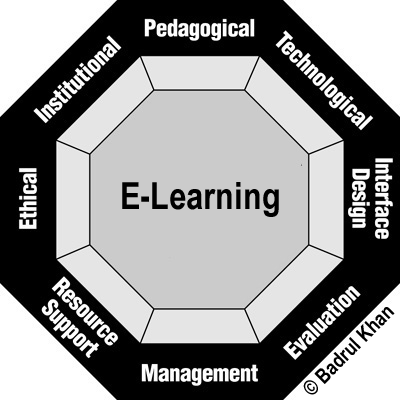

Photo by Teleyinex
Web Literacy in Adults
An Educational Approach Using Game Mechanics in Curriculum to Teach Web Literacy in Adults
by Laura Hilliger
A Master Thesis Presented to the Zentrum für Qualitätssicherung in Studium und Weiterbildung of the University of Rostock. In partial fulfillment of the requirements for the degree of Master of Arts in Media and Education

Photo by Cisco
We live in a digital world.
- Our global knowledge ecosystem is the World Wide Web
- The Internet has become an important piece of our infrastructure
- We use the Internet to communicate, to work, to make decisions
- We need it to fully participate

Understanding the Web is a part of being educated.
- You are educated when you can think critically about key problems (Klafki)
- The Web holds the world's information and humanity's knowledge
- It gives us an infrastructure to consider those problems and to help solve them

Technology keeps changing on us
Many people are not participating in the global exchange of knowledge, which supports us in thinking critically about key problems because they lack the skills to do so

Using a Pragmatic Approach
- I wanted to contribute knowledge
- I wanted to link theory and practice
- I did not want to get hung up on strict rules
- Working pragmatically allowed exploration, flexibility and discovery

Photo by Matt Thompson
Learning through Making
- Interest driven, project based learning
- Connecting head and hand

Gamification
- Motivation
- Practice
- Intensity
- embedded assessments and other game mechanics
4 Levels at which Blended Learning can occur

Khan's Octagonal Framework for Meaningful E-Learning Experiences

Graphic by Badrul Khan
Combining Methodologies
- Interest Driven, Project-based Learning
- where Khan's 8 Dimensions are considered
- on each Blended Learning level
- and content uses game mechanics

Online Learning and Support with In-Person Workshops
- Each level blends both the production and consumption of learning materials
- various workshop formats target introductory, instructional or practical knowledge acquisition
- in-person crash courses
- online and offline materials